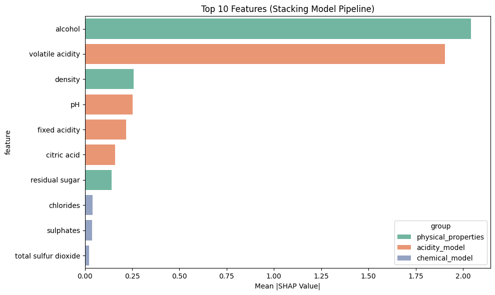

import numpy as np
import pandas as pd
import lightgbm as lgb
from sklearn.model_selection import cross_val_predict
class StackModel:
def __init__(self, model_configs, final_estimator, cv=None):
"""
Initialize the stacking model.
Args:
model_configs (dict): Configuration for base models. Each key is a model name, and
the value is a dictionary with the following keys:
- 'feature_names': List of feature names used by the model.
- 'estimators': The model class (e.g., sklearn classifier or regressor).
- 'hyperparameters': Dictionary of hyperparameters for the estimator.
final_estimator (BaseEstimator): Meta-model for stacking.
cv (int, cross-validation generator, or None): Cross-validation strategy for
generating meta-features. Default is None (5-fold CV).
"""
self.model_configs = model_configs
self.final_estimator = final_estimator
self.cv = cv or 5
self.models = {}
self.classes_ = None
self.feature_names_ = None
def fit(self, X, y):
"""
Train the stacking model.
Args:
X (pd.DataFrame): Feature matrix.
y (pd.Series or np.ndarray): Target vector.
"""
if not isinstance(X, pd.DataFrame):
raise ValueError("X must be a pandas DataFrame.")
if not isinstance(y, (pd.Series, np.ndarray)):
raise ValueError("y must be a pandas Series or a numpy array.")
# Store class labels
if hasattr(self.final_estimator, "classes_") or hasattr(self.final_estimator, "predict_proba"):
self.classes_ = np.unique(y)
self.models = {}
meta_features_list = []
meta_feature_names = []
# Train base models and generate cross-validated meta-features
for model_name, config in self.model_configs.items():
features = config['feature_names']
if config['estimators'] is not None:
estimator = config['estimators'](**config['hyperparameters'])
# Generate cross-validated meta-features
meta_features = cross_val_predict(
estimator, X[features], y, cv=self.cv, method='predict_proba'
)
meta_features_list.append(meta_features)
meta_feature_names.extend(
[f"{model_name}_class{i}" for i in range(meta_features.shape[1])]
)
# Train the model on the full dataset
estimator.fit(X[features], y)
self.models[model_name] = {
'features': features,
'model': estimator
}
else:
# Use raw features directly for models without estimators
meta_features = X[features].values
meta_features_list.append(meta_features)
meta_feature_names.extend(features)
self.models[model_name] = {
'features': features,
'model': None
}
# Combine all meta-features
self.meta_features = np.hstack(meta_features_list)
# Store meta-feature names
self.feature_name_ = meta_feature_names
# Train the final estimator using meta-features
self.final_estimator.fit(self.meta_features, y)
def predict(self, X, raw_score=False, pred_contrib=False):
"""
Predict class labels using the stacking model.
Args:
X (pd.DataFrame): Feature matrix.
raw_score (bool): Whether to return raw scores (decision function output).
Returns:
np.ndarray: Predicted class labels or decision function output.
"""
meta_features = self.transform(X)
# Support raw_score only if the final estimator is LightGBM
if raw_score:
if isinstance(self.final_estimator, lgb.LGBMClassifier):
return self.final_estimator.predict(X=meta_features, raw_score=True) # Return raw score for LGBM
else:
raise TypeError("The 'raw_score' option is only supported for LGBMClassifier.")
# Support pred_contrib only if the final estimator is LightGBM
if pred_contrib:
if isinstance(self.final_estimator, lgb.LGBMClassifier):
# Return SHAP-like feature contributions (pred_contrib) for LGBMClassifier
return self.final_estimator.predict(X=meta_features, pred_contrib=True)
else:
raise TypeError("The 'pred_contrib' option is only supported for LGBMClassifier.")
return self.final_estimator.predict(meta_features)
def predict_proba(self, X):
"""
Predict probabilities using the stacking model.
Args:
X (pd.DataFrame): Feature matrix.
Returns:
np.ndarray: Predicted probabilities.
"""
meta_features = self.transform(X)
return self.final_estimator.predict_proba(meta_features)
def transform(self, X):
"""
Generate meta-features for a given dataset, transforming the input features.
Args:
X (pd.DataFrame): Feature matrix.
Returns:
np.ndarray: Transformed meta-features as a numpy array.
"""
if not isinstance(X, pd.DataFrame):
raise ValueError("X must be a pandas DataFrame.")
meta_features = []
for model_name, model_info in self.models.items():
features = model_info['features']
if model_info['model'] is not None:
model = model_info['model']
meta_features.append(model.predict_proba(X[features]))
else:
meta_features.append(X[features].values)
return np.hstack(meta_features)StackModelShapExplainer Documentation
Overview
StackModelShapExplainer is a specialized explainability tool designed for stacked ensemble models, providing deep insights into how predictions flow through complex multi-model architectures. It extends traditional SHAP (SHapley Additive exPlanations) analysis to work with hierarchical models where base models feed into meta-models.
Methodology
1. Multi-level SHAP Approach
The StackModelShapExplainer uses a hierarchical approach to calculate feature attributions:
Base Model Explanations: SHAP values are calculated for each base model independently, showing how input features influence each base model’s predictions.
Meta-Model Explanations: SHAP values are calculated for the meta-model, showing how the outputs from base models (meta-features) influence the final prediction.
Combined Explanations: The two levels of SHAP values are combined using chain rule principles to trace the influence of original features through the entire model stack to the final prediction.
2. Influence Chain Calculation
For each feature in the input data, the explainer calculates an “influence chain” showing how that feature affects the final prediction:
Original feature → Base model outputs → Meta-model → Final predictionThe full attribution calculation follows this formula:
For a feature x_i, its total influence on the final prediction is:
\[\phi_{\text{combined}}(x_i) = \sum_{j} \phi_{\text{meta}}(f_j) \cdot \frac{\partial f_j}{\partial x_i}\]
Where: - \(\phi_{\text{combined}}(x_i)\) is the combined SHAP value for feature \(x_i\) - \(\phi_{\text{meta}}(f_j)\) is the meta-model SHAP value for meta-feature \(f_j\) - \(\frac{\partial f_j}{\partial x_i}\) represents how meta-feature \(f_j\) changes with feature \(x_i\)
3. Background Data Sampling
To calculate SHAP values efficiently, the explainer uses a sampling approach:
- A subset of the training data is used as background data
- This provides a reference distribution for feature values
- The sampling is stratified to maintain class balance (for classification problems)
User Manual
Installation
# Assuming you have the StackModelShapExplainer class defined
# No additional packages beyond standard ML libraries and SHAP are requiredInitializing the Explainer
# Create an explainer for your stacked model
explainer = StackModelShapExplainer(
stack_model=stack_model, # Your trained stacking model
background_data=X_train, # Training data for background distribution
n_background=100 # Number of background samples to use
)Basic Usage
# Get explanation for a single observation
explanation = explainer.explain_instance(
X_instance=new_observation, # DataFrame with a single row
target_class=1 # For classification, which class to explain
)
# Generate a waterfall plot showing feature contributions
fig, ax = explainer.plot_waterfall(
X_instance=new_observation,
target_class=1,
max_features=10 # Show only top 10 features
)Exploring Feature Influence
# Get detailed influence information for a specific feature
influence = explainer.get_feature_influence(explanation, 'feature_name')
print(f"Total influence: {influence['combined_influence']:.6f}")
print("\nInfluence paths:")
for meta_feature, value in influence['influence_paths'].items():
print(f" Via {meta_feature}: {value:.6f}")Exploring Model Influence
# Get detailed influence information for a specific base model
model_influence = explainer.get_model_influence(explanation, 'model_name')
print(f"Total model influence: {model_influence['total_influence']}")
print("\nInfluence through meta-features:")
for meta_feature, value in model_influence['meta_features'].items():
print(f" Via {meta_feature}: {value}")Visualizing Overall Feature Importance
# Plot overall feature importance
fig, ax = explainer.plot_feature_importance(
X_data=X_test, # Data to calculate importance over
target_class=1, # Class to explain (for classification)
max_features=15, # Number of features to show
plot_type='bar' # 'bar' or 'violin'
)Visualizing the Prediction Path
# Visualize how a prediction flows through the model
viz = explainer.visualize_prediction_path(
X_instance=new_observation,
target_class=1,
top_features=5 # Number of top features to highlight
)Function Reference
Core Functions
explain_instance(X_instance, target_class=None)
Generates a comprehensive explanation for a single observation, returning a dictionary with SHAP values at each level of the model.
plot_waterfall(X_instance, target_class=None, max_features=10)
Creates a waterfall plot showing how each feature contributes to pushing the prediction away from the baseline value.
get_feature_influence(explanation, feature_name)
Extracts detailed information about how a specific feature influences the final prediction through various paths in the model.
get_model_influence(explanation, model_name)
Analyzes how a specific base model influences the final prediction through its output meta-features.
Visualization Functions
plot_feature_importance(X_data, target_class=None, max_features=15, plot_type='bar')
Creates a bar or violin plot showing the overall importance of features across multiple observations.
visualize_prediction_path(X_instance, target_class=None, top_features=5)
Generates a visualization showing how feature values flow through the model to influence the final prediction.
Explanation Structure
The explain_instance() function returns a dictionary with the following components:
{
'combined_shap': {
'feature1': 0.23, # Combined influence of feature1 on final prediction
'feature2': -0.11, # etc.
...
},
'feature_influence_chain': {
'feature1': {
'meta_feature1': 0.15, # How feature1 influences through meta_feature1
'meta_feature2': 0.08, # How feature1 influences through meta_feature2
...
},
...
},
'meta_model_shap': array(...), # SHAP values for meta-model
'base_model_shap': {
'model1': {
'shap_values': array(...), # SHAP values for base model
'feature_names': [...] # Features used by this model
},
...
},
'meta_model_expected_value': 0.5, # Baseline prediction of meta-model
'prediction': 0.73 # Final prediction value
}Example Workflow
- Train a stacked ensemble model using your preferred library
- Initialize the explainer with your trained model and background data
- Generate explanations for observations of interest
- Visualize the results using the provided plotting functions
- Drill down into specific features or models using the get_feature_influence and get_model_influence functions
Best Practices
- Use a representative background dataset - The quality of SHAP explanations depends on having a good baseline distribution
- Consider computational resources - SHAP analysis can be computationally intensive, so adjust n_background accordingly
- Focus on important features - Use max_features parameters to focus on the most influential variables
- Compare across instances - Look at explanations for multiple observations to understand model behavior
- Combine with other techniques - Use in conjunction with partial dependence plots and other explanatory techniques
Limitations
- Approximation - The explainer uses approximations for efficiency, which may slightly reduce accuracy
- Computational Cost - Full SHAP analysis can be slow for very large models or datasets
- Linear Combination Assumption - The influence chain calculation assumes effects combine linearly
- Feature Independence - Standard SHAP assumes feature independence, which may not hold in all datasets
import numpy as np
import pandas as pd
import lightgbm as lgb
from sklearn.model_selection import cross_val_predict
import shap
import matplotlib.pyplot as plt
import plotly.express as px
from matplotlib.patches import Patch
import seaborn as sns
class StackModelShapExplainer:
"""
Class to explain predictions from a StackModel using SHAP values.
This separate class handles the explanation of predictions without modifying the original model.
"""
def __init__(self, stack_model, background_data=None, n_background=100):
"""
Initialize the SHAP explainer for a StackModel.
Args:
stack_model (StackModel): The trained stacking model to explain
background_data (pd.DataFrame, optional): Background data for SHAP explainers
n_background (int): Number of background samples to use if background_data is large
"""
self.stack_model = stack_model
# Create background data for SHAP explainers
if background_data is None:
raise ValueError("Background data must be provided for SHAP explainers")
if len(background_data) > n_background:
self.background_data = background_data.sample(n_background, random_state=42)
else:
self.background_data = background_data
# Initialize explainers for each model
self.explainers = {}
self._init_base_explainers()
# Initialize explainer for meta-model
self.meta_background_data = self.stack_model.transform(self.background_data)
self._init_meta_explainer()
# Store expected values for each explainer
self.expected_value = self._get_expected_values()
def _init_base_explainers(self):
"""Initialize SHAP explainers for each base model"""
for model_name, model_info in self.stack_model.models.items():
if model_info['model'] is not None:
features = model_info['features']
model = model_info['model']
# Sample background data for this model
bg_data = self.background_data[features].values
# Create appropriate explainer based on model type
if isinstance(model, lgb.LGBMClassifier):
self.explainers[model_name] = shap.TreeExplainer(model, bg_data)
elif hasattr(model, "predict_proba"):
# For models with predict_proba but not LightGBM
self.explainers[model_name] = shap.KernelExplainer(
model.predict_proba, bg_data
)
else:
# For other models
self.explainers[model_name] = shap.KernelExplainer(
model.predict, bg_data
)
def _init_meta_explainer(self):
"""Initialize SHAP explainer for the meta-model"""
if isinstance(self.stack_model.final_estimator, lgb.LGBMClassifier):
self.meta_explainer = shap.TreeExplainer(
self.stack_model.final_estimator, self.meta_background_data
)
elif hasattr(self.stack_model.final_estimator, "predict_proba"):
self.meta_explainer = shap.KernelExplainer(
self.stack_model.final_estimator.predict_proba, self.meta_background_data
)
else:
self.meta_explainer = shap.KernelExplainer(
self.stack_model.final_estimator.predict, self.meta_background_data
)
def _get_expected_values(self):
"""
Get expected values for all explainers (base models and meta model).
Returns:
dict: Dictionary with expected values for each model
"""
expected_values = {}
# Get expected values for base models
for model_name, explainer in self.explainers.items():
if hasattr(explainer, 'expected_value'):
expected_values[model_name] = explainer.expected_value
# Get expected value for meta model
if hasattr(self.meta_explainer, 'expected_value'):
expected_values['meta_model'] = self.meta_explainer.expected_value
return expected_values
def explain_instance(self, X_instance, target_class=None):
"""
Explain predictions for a single instance using SHAP values throughout the pipeline.
Args:
X_instance (pd.DataFrame): Single row dataframe with features
target_class (int, optional): Class index to explain (for multi-class problems)
Returns:
dict: Dictionary with SHAP explanation information
"""
if len(X_instance) != 1:
raise ValueError("X_instance must be a single instance (DataFrame with one row)")
# Step 1: Get SHAP values for each base model
base_model_shap_values = {}
base_meta_features = {}
for model_name, model_info in self.stack_model.models.items():
features = model_info['features']
X_model = X_instance[features]
if model_info['model'] is not None:
# Get SHAP values for this base model
model_shap = self.explainers[model_name].shap_values(X_model)
# For multi-class, handle the list of arrays
if isinstance(model_shap, list):
if target_class is not None:
model_shap = model_shap[target_class]
else:
# If no target class specified, average across classes
model_shap = np.mean(np.array(model_shap), axis=0)
base_model_shap_values[model_name] = {
'shap_values': model_shap,
'feature_names': features
}
# Get the output of this model (meta-features it produces)
base_meta_features[model_name] = model_info['model'].predict_proba(X_model)
else:
# For direct features (no model), SHAP values directly affect meta-model
base_meta_features[model_name] = X_model.values
# Step 2: Get SHAP values for meta-model on transformed features
meta_features = self.stack_model.transform(X_instance)
meta_model_shap = self.meta_explainer.shap_values(meta_features)
# For multi-class, handle the list of arrays
if isinstance(meta_model_shap, list):
if target_class is not None:
meta_model_shap = meta_model_shap[target_class]
else:
# If no target class specified, average across classes
meta_model_shap = np.mean(np.array(meta_model_shap), axis=0)
# Step 3: Apply chain rule to get impact of original features on final prediction
# Initialize dictionary to store combined SHAP values
combined_shap = {}
feature_influence_chain = {}
# Current meta-feature index in the concatenated meta_features array
meta_feature_idx = 0
for model_name, model_info in self.stack_model.models.items():
if model_info['model'] is not None:
# This model processes features and produces meta-features
model_contrib = base_model_shap_values[model_name]
orig_features = model_info['features']
n_classes = base_meta_features[model_name].shape[1]
# For each original feature in this model
for i, feature in enumerate(orig_features):
# Initialize if not already present
if feature not in combined_shap:
combined_shap[feature] = 0
feature_influence_chain[feature] = {}
# For each class output from this model
for class_idx in range(n_classes):
# Get current meta-feature name
meta_feat_name = f"{model_name}_class{class_idx}"
# Get SHAP value of this meta-feature in the meta-model
meta_shap_val = meta_model_shap[0, meta_feature_idx + class_idx]
# Get influence of original feature on this model's output for this class
# For multi-class base models
if isinstance(model_contrib['shap_values'], list):
base_shap_val = model_contrib['shap_values'][class_idx][0, i]
else:
base_shap_val = model_contrib['shap_values'][0, i]
# Chain rule: multiply SHAP values
chain_effect = base_shap_val * meta_shap_val
combined_shap[feature] += chain_effect
# Store the chain of influence for detailed explanation
if meta_feat_name not in feature_influence_chain[feature]:
feature_influence_chain[feature][meta_feat_name] = chain_effect
# Update meta_feature index
meta_feature_idx += n_classes
else:
# For direct features, get their impact directly from meta-model SHAP values
orig_features = model_info['features']
for i, feature in enumerate(orig_features):
combined_shap[feature] = meta_model_shap[0, meta_feature_idx + i]
feature_influence_chain[feature] = {
feature: combined_shap[feature] # Direct influence
}
# Update meta_feature index
meta_feature_idx += len(orig_features)
return {
'combined_shap': combined_shap,
'feature_influence_chain': feature_influence_chain,
'meta_model_shap': meta_model_shap,
'base_model_shap': base_model_shap_values,
'meta_features': meta_features,
'expected_value': self.expected_value
}
def plot_feature_importance_old(self, X, target_class=None, top_n=10):
"""
Plot overall feature importance across the entire stacking model.
Args:
X (pd.DataFrame): Feature matrix to compute importances
target_class (int, optional): Class to explain for multi-class problems
top_n (int): Number of top features to display
"""
# Compute SHAP values for a sample of instances
if len(X) > 100:
X_sample = X.sample(100, random_state=42)
else:
X_sample = X
all_shap_values = {}
# For each sample, compute combined SHAP values
for i in range(len(X_sample)):
instance = X_sample.iloc[[i]]
explanation = self.explain_instance(instance, target_class)
# Aggregate SHAP values across samples
for feature, shap_val in explanation['combined_shap'].items():
if feature not in all_shap_values:
all_shap_values[feature] = []
all_shap_values[feature].append(shap_val)
# Compute mean absolute SHAP value for each feature
mean_abs_shap = {feat: np.mean(np.abs(vals)) for feat, vals in all_shap_values.items()}
# Sort features by importance
sorted_features = sorted(mean_abs_shap.items(), key=lambda x: x[1], reverse=True)
# Get top N features
top_features = sorted_features[:top_n]
# Create plot
plt.figure(figsize=(10, 6))
features, values = zip(*top_features)
plt.barh(range(len(features)), values, align='center')
plt.yticks(range(len(features)), features)
plt.xlabel('Mean |SHAP Value|')
plt.title(f'Top {top_n} Features (Stacking Model Pipeline)')
plt.tight_layout()
plt.show()
return mean_abs_shap
def plot_feature_importance(self, X, target_class=None, top_n=10):
"""
Plot overall feature importance across the entire stacking model.
Args:
X (pd.DataFrame): Feature matrix to compute importances
target_class (int, optional): Class to explain for multi-class problems
top_n (int): Number of top features to display
"""
# Compute SHAP values for a sample of instances
if len(X) > 100:
X_sample = X.sample(100, random_state=42)
else:
X_sample = X
all_shap_values = {}
# For each sample, compute combined SHAP values
for i in range(len(X_sample)):
instance = X_sample.iloc[[i]]
explanation = self.explain_instance(instance, target_class)
# Aggregate SHAP values across samples
for feature, shap_val in explanation['combined_shap'].items():
if feature not in all_shap_values:
all_shap_values[feature] = []
all_shap_values[feature].append(shap_val)
# Compute mean absolute SHAP value for each feature
mean_abs_shap = {feat: np.mean(np.abs(vals)) for feat, vals in all_shap_values.items()}
# Sort features by importance
sorted_features = sorted(mean_abs_shap.items(), key=lambda x: x[1], reverse=True)
# Get top N features
top_features = sorted_features[:top_n]
features, values = zip(*top_features)
# Assign feature groups based on model_configs
feature_to_model = {}
for model_name, config in self.stack_model.model_configs.items():
for feat in config['feature_names']:
feature_to_model[feat] = model_name
# Features not belonging to any base model are labeled as "meta"
feature_groups = [feature_to_model.get(feat, "meta") for feat in features]
# Create plot
plt.figure(figsize=(10, 6))
feature_df = pd.DataFrame({
'feature': features,
'mean_abs_shap': values,
'group': feature_groups
})
sns.barplot(data=feature_df, x='mean_abs_shap', y='feature', hue='group', dodge=False, palette='Set2')
plt.xlabel('Mean |SHAP Value|')
plt.title(f'Top {top_n} Features (Stacking Model Pipeline)')
plt.tight_layout()
plt.show()
return mean_abs_shap
def visualize_prediction_path(self, X_instance, target_class=None):
"""
Create a visualization showing how features flow through the model to affect prediction.
Args:
X_instance (pd.DataFrame): Single instance to explain
target_class (int, optional): Class to explain for multi-class problems
"""
if len(X_instance) != 1:
raise ValueError("X_instance must be a single instance (DataFrame with one row)")
explanation = self.explain_instance(X_instance, target_class)
feature_chains = explanation['feature_influence_chain']
# Create plot
plt.figure(figsize=(12, 12))
# Determine feature ordering by importance
feature_importance = {f: np.abs(sum(vals.values())) for f, vals in feature_chains.items()}
sorted_features = sorted(feature_importance.items(), key=lambda x: x[1], reverse=True)
features = [f[0] for f in sorted_features]
# Limit to top features for readability
if len(features) > 10:
features = features[:10]
# Define color mapping for legend
color_mapping = {
'Negative Contribution': '#008BFB', # Blue for negative SHAP values
'Positive Contribution': '#FF0051' # Red for positive SHAP values
}
# Create a grid of plots - one row per feature
for i, feature in enumerate(features):
plt.subplot(len(features), 1, i+1)
# Get intermediate influences for this feature
influences = feature_chains[feature]
meta_features = list(influences.keys())
values = list(influences.values())
# Sort by absolute value
sorted_idx = np.argsort(np.abs(values))[::-1]
meta_features = [meta_features[j] for j in sorted_idx]
values = [values[j] for j in sorted_idx]
# Limit to top 5 intermediate influences for readability
if len(meta_features) > 5:
meta_features = meta_features[:5]
values = values[:5]
# Create bar chart
bars = plt.barh(meta_features, values, align='center')
# Color positive and negative contributions differently
for j, bar in enumerate(bars):
if values[j] < 0:
bar.set_color('#008BFB')
else:
bar.set_color('#FF0051')
plt.axvline(x=0, color='black', linestyle='-', alpha=0.3)
plt.title(f"Feature: {feature}")
# Add a single legend at the bottom of the figure
legend_elements = [
Patch(facecolor=color_mapping['Negative Contribution'], edgecolor='black', label='Negative Contribution'),
Patch(facecolor=color_mapping['Positive Contribution'], edgecolor='black', label='Positive Contribution')
]
plt.figlegend(handles=legend_elements, loc='lower center', ncol=2, frameon=False, fontsize=12)
plt.suptitle("SHAP Value Contribution")
plt.tight_layout(rect=[0, 0.03, 1, 0.95]) # Adjust layout to make space for the legend
plt.show()
return explanation
def plot_waterfall(self, X_instance, target_class=None, max_features=10):
"""
Create a waterfall plot showing how each feature's SHAP value influences
the prediction for a single observation.
Args:
X_instance (pd.DataFrame): Single row dataframe with features to explain
target_class (int, optional): Class index to explain (for multi-class problems)
max_features (int): Maximum number of features to display in the plot
Returns:
tuple: (figure, axes) matplotlib figure and axes objects
"""
if len(X_instance) != 1:
raise ValueError("X_instance must be a single instance (DataFrame with one row)")
# Get explanation for the instance
explanation = self.explain_instance(X_instance, target_class)
combined_shap = explanation['combined_shap']
# Get expected value (baseline) for meta model
if target_class is not None and isinstance(self.expected_value['meta_model'], list):
baseline = self.expected_value['meta_model'][target_class]
else:
baseline = self.expected_value['meta_model']
if isinstance(baseline, np.ndarray) and baseline.size > 1:
baseline = baseline[0]
# Sort features by absolute SHAP value
sorted_features = sorted(
[(feat, val) for feat, val in combined_shap.items()],
key=lambda x: abs(x[1]),
reverse=True
)
# Limit to max_features
if len(sorted_features) > max_features:
top_features = sorted_features[:max_features-1]
# Combine remaining features into "other"
other_impact = sum(val for _, val in sorted_features[max_features-1:])
top_features.append(("Other features", other_impact))
else:
top_features = sorted_features
# Create lists for plotting
features = [item[0] for item in top_features]
impacts = [item[1] for item in top_features]
# Calculate final prediction
final_prediction = baseline + sum(impacts)
# Create figure and axes
fig, ax = plt.subplots(figsize=(10, 7))
# Define colors for positive and negative contributions
colors = ['#FF0051' if x > 0 else '#008BFB' for x in impacts]
# Calculate positions for waterfall bars
positions = np.zeros(len(impacts) + 1)
positions[0] = baseline
for i in range(len(impacts)):
positions[i+1] = positions[i] + impacts[i]
# Plot waterfall chart
# First bar (baseline)
ax.bar(0, baseline, bottom=0, color='#BBBBBB', width=0.6,
label='Baseline (Expected Value)')
# Feature impact bars
for i, impact in enumerate(impacts):
# For each feature impact, plot a bar from the previous cumulative position
# Bottom of each bar is the previous cumulative position
bottom = positions[i] - max(0, impact)
height = abs(impact)
ax.bar(i+1, height, bottom=bottom, color=colors[i], width=0.6)
# Final prediction bar
ax.bar(len(impacts)+1, final_prediction, bottom=0, color='#32CD32', width=0.6,
label='Final Prediction')
# Connect bars with lines
for i in range(len(positions)-1):
ax.plot([i+0.3, i+0.7], [positions[i], positions[i]], 'k-', lw=0.5)
# Annotate bars with feature names and values
ax.set_xticks(range(len(impacts) + 2))
xlabels = ['Baseline'] + features + ['Prediction']
ax.set_xticklabels(xlabels, rotation=45, ha='right')
# Add value labels to the bars
for i, pos in enumerate(positions):
if i == 0:
ax.text(i, pos + 0.01, f'{baseline:.3f}', ha='center', va='bottom')
elif i == len(positions) - 1:
ax.text(i, pos + 0.01, f'{pos:.3f}', ha='center', va='bottom')
# Add impact values as text
for i, impact in enumerate(impacts):
ax.text(i+1, positions[i] + impact/2, f'{impact:.3f}',
ha='center', va='center', weight='bold',
color='white' if abs(impact) > 0.1 else 'black')
# Add a title and axis labels
if target_class is not None:
ax.set_title(f'Feature Contributions to Prediction (Class {target_class})')
else:
ax.set_title('Feature Contributions to Prediction')
ax.set_ylabel('Model Output')
ax.grid(axis='y', linestyle='--', alpha=0.7)
# Create custom legend
legend_elements = [
Patch(facecolor='#BBBBBB', edgecolor='black', label='Baseline'),
Patch(facecolor='#FF0051', edgecolor='black', label='Positive Impact'),
Patch(facecolor='#008BFB', edgecolor='black', label='Negative Impact'),
Patch(facecolor='#32CD32', edgecolor='black', label='Final Prediction')
]
ax.legend(handles=legend_elements, loc='best')
plt.tight_layout()
return fig, ax
def get_feature_influence(self, explanation, feature_name):
"""
Extract the influence of a specific feature to the final prediction
Args:
explanation (dict): The explanation dict from explain_instance
feature_name (str): Name of the feature to get influence for
Returns:
dict: Dictionary containing influence details
"""
if feature_name not in explanation['combined_shap']:
print(f"Feature '{feature_name}' not found in explanation!")
return None
# Get the combined SHAP value (total influence on final prediction)
combined_shap = explanation['combined_shap'][feature_name]
# Get the detailed influence chain (how the feature affects various meta-features)
influence_chain = explanation['feature_influence_chain'][feature_name]
# Find which base model contains this feature
model_name = None
feature_index = None
# This requires access to the stack_model object, which isn't in the explanation dict
# We can extract this information from the base_model_shap if available
for m_name, shap_info in explanation['base_model_shap'].items():
if feature_name in shap_info['feature_names']:
model_name = m_name
feature_index = shap_info['feature_names'].index(feature_name)
break
# Get base model SHAP values for this feature
base_model_shap = None
if model_name is not None and feature_index is not None:
base_shap = explanation['base_model_shap'][model_name]['shap_values']
# Handle multi-class base models
if isinstance(base_shap, list):
base_model_shap = [shap_vals[0, feature_index] for shap_vals in base_shap]
else:
base_model_shap = base_shap[0, feature_index]
return {
'feature': feature_name,
'combined_influence': combined_shap,
'influence_paths': influence_chain,
'base_model': model_name,
'base_model_shap': base_model_shap
}
def get_model_influence(self, explanation, model_name):
"""
Extract the influence of a specific base model to the final prediction
Args:
explanation (dict): The explanation dict from explain_instance
model_name (str): Name of the base model to get influence for
Returns:
dict: Dictionary containing influence details
"""
# Check if the model exists in the stack model
if model_name not in self.stack_model.models:
print(f"Model '{model_name}' not found in stack model!")
return None
# Check if the model has SHAP values in the explanation
if model_name not in explanation['base_model_shap']:
print(f"Model '{model_name}' not found in explanation's base model SHAP values!")
return None
# Get information about this model
model_info = self.stack_model.models[model_name]
features = model_info['features']
# Get SHAP values for this model's features
base_shap_info = explanation['base_model_shap'][model_name]
# Get meta-features produced by this model
# For classification models, this will be class probabilities
# For regression models, this will be predictions
model_meta_features = []
meta_feature_indices = []
# Find meta-features corresponding to this model in the meta-model
meta_idx = 0
for m_name, m_info in self.stack_model.models.items():
if m_name == model_name:
# If it's our target model, note the indices
if m_info['model'] is not None:
# For models (not direct features), get number of outputs
if hasattr(m_info['model'], 'n_classes_'):
n_outputs = m_info['model'].n_classes_
else:
n_outputs = 1
# Store meta-feature names and indices
for i in range(n_outputs):
meta_feat_name = f"{model_name}_class{i}" if n_outputs > 1 else model_name
model_meta_features.append(meta_feat_name)
meta_feature_indices.append(meta_idx + i)
else:
# For direct features, each feature is a meta-feature
for feature in features:
model_meta_features.append(feature)
meta_feature_indices.append(meta_idx)
meta_idx += 1
break
else:
# Update meta-feature index based on previous models
if m_info['model'] is not None:
if hasattr(m_info['model'], 'n_classes_'):
meta_idx += m_info['model'].n_classes_
else:
meta_idx += 1
else:
meta_idx += len(m_info['features'])
# Get meta-model SHAP values for this model's outputs
meta_shap = explanation['meta_model_shap']
# Handle multi-class meta models
if isinstance(meta_shap, list):
meta_model_shap = []
for class_shap in meta_shap:
meta_model_shap.append([class_shap[0, idx] for idx in meta_feature_indices])
else:
meta_model_shap = [meta_shap[0, idx] for idx in meta_feature_indices]
# Calculate total influence of this model on final prediction
# Sum of all meta-feature SHAP values corresponding to this model
if isinstance(meta_model_shap[0], list):
# For multi-class meta models
total_influence = [sum(class_shap) for class_shap in meta_model_shap]
else:
total_influence = sum(meta_model_shap)
# Get influence of each feature in this model
feature_influences = {}
for feature in features:
# Try to find this feature in the combined SHAP values
if feature in explanation['combined_shap']:
feature_influences[feature] = explanation['combined_shap'][feature]
return {
'model': model_name,
'total_influence': total_influence,
'meta_features': dict(zip(model_meta_features, meta_model_shap)),
'features': features,
'feature_influences': feature_influences,
'base_model_shap_values': base_shap_info['shap_values']
}This verification code includes two key functions designed to validate and debug the SHAP explanations produced by the StackModelShapExplainer:
verify_chain_rule_calculation Function
This function validates whether the chain rule calculations in the explainer are correct for a specific feature. It:
Identifies which model contains the feature - It searches through the stack model to determine which base model uses the specified feature.
Extracts base model SHAP values - It retrieves the SHAP values for this feature from the base model, handling both classification and regression cases.
Examines meta-model SHAP values - It identifies the meta-features that are influenced by this feature and retrieves their SHAP values.
Validates chain rule calculations - It compares the sum of influence paths (from the feature influence chain) with the combined SHAP value to verify mathematical consistency.
Handles pass-through features - For features that bypass base models and go directly to the meta-model, it performs a different validation.
The function provides detailed logging at each step, showing the mathematical components that should add up to the final combined SHAP value. It concludes with a pass/fail indicator showing whether the chain rule calculation is correct (✓) or has a discrepancy (✗).
print_detailed_shap_values Function
This function prints a comprehensive breakdown of all SHAP values at each level of the stack model:
Original feature SHAP values - Lists the combined influence of each original feature.
Base model SHAP values - For each base model, it shows how input features influence that model’s output, handling multi-class cases appropriately.
Meta-feature values - Shows the actual values of the meta-features (outputs from base models) that feed into the meta-model.
Meta-model SHAP values - Details how each meta-feature influences the final prediction.
Chain rule calculations - For each original feature, it shows how its influence propagates through different meta-features, culminating in its combined effect.
These functions are valuable debugging and verification tools that:
- Ensure the mathematical correctness of the combined SHAP value calculations
- Help users understand the flow of influence through the model stack
- Validate that the chain rule implementation properly accounts for all paths of influence
- Provide transparency into how feature attributions are derived
They would typically be used during development of the explainer or when users want to deeply understand or verify the explanations for particularly important predictions.
def verify_chain_rule_calculation(explanation, stack_model, feature_name, target_class=None):
"""
Verify the chain rule calculation for a specific feature
Args:
explanation (dict): The explanation dict from explain_instance
stack_model (StackModel): The trained stacking model
feature_name (str): Name of the feature to verify
target_class (int, optional): Class to focus on for multi-class problems
"""
print(f"\n===== VERIFYING CHAIN RULE FOR FEATURE: {feature_name} =====\n")
# Find which model contains this feature
model_name = None
feature_index = None
for m_name, model_info in stack_model.models.items():
if feature_name in model_info['features']:
model_name = m_name
feature_index = model_info['features'].index(feature_name)
break
if model_name is None:
print(f"Feature {feature_name} not found in any model!")
return
print(f"Feature {feature_name} belongs to model {model_name} at index {feature_index}")
# Get base model SHAP values for this feature
if stack_model.models[model_name]['model'] is not None:
base_shap = explanation['base_model_shap'][model_name]['shap_values']
if isinstance(base_shap, list) and target_class is not None:
base_feature_shap = base_shap[target_class][0, feature_index]
print(f"Base model SHAP value (class {target_class}): {base_feature_shap:.6f}")
elif isinstance(base_shap, list):
for class_idx in range(len(base_shap)):
base_feature_shap = base_shap[class_idx][0, feature_index]
print(f"Base model SHAP value (class {class_idx}): {base_feature_shap:.6f}")
else:
base_feature_shap = base_shap[0, feature_index]
print(f"Base model SHAP value: {base_feature_shap:.6f}")
# Get meta-model SHAP values for outputs of this model
meta_shap = explanation['meta_model_shap']
meta_feature_names = stack_model.feature_name_
meta_indices = [i for i, name in enumerate(meta_feature_names) if name.startswith(f"{model_name}_class")]
print("\nMeta-model SHAP values for this model's outputs:")
if isinstance(meta_shap, list) and target_class is not None:
for idx in meta_indices:
meta_feat_name = meta_feature_names[idx]
meta_feat_shap = meta_shap[target_class][0, idx]
print(f" {meta_feat_name}: {meta_feat_shap:.6f}")
elif isinstance(meta_shap, list):
for class_idx in range(len(meta_shap)):
for idx in meta_indices:
meta_feat_name = meta_feature_names[idx]
meta_feat_shap = meta_shap[class_idx][0, idx]
print(f" {meta_feat_name}: {meta_feat_shap:.6f}")
else:
for idx in meta_indices:
meta_feat_name = meta_feature_names[idx]
meta_feat_shap = meta_shap[0, idx]
print(f" {meta_feat_name}: {meta_feat_shap:.6f}")
# Verify chain rule calculation
print("\nChain rule calculation:")
combined_effect = 0
for meta_feature, value in explanation['feature_influence_chain'][feature_name].items():
print(f" {meta_feature}: {value:.6f}")
combined_effect += value
print(f"\nSum of all paths: {combined_effect:.6f}")
print(f"Combined SHAP value: {explanation['combined_shap'][feature_name]:.6f}")
if abs(combined_effect - explanation['combined_shap'][feature_name]) < 1e-6:
print("✓ Chain rule calculation is correct!")
else:
print("✗ Chain rule calculation has discrepancy!")
else:
# For pass-through features
meta_shap = explanation['meta_model_shap']
meta_feature_names = stack_model.feature_name_
meta_idx = meta_feature_names.index(feature_name)
print("This is a pass-through feature, so SHAP value comes directly from meta-model.")
if isinstance(meta_shap, list) and target_class is not None:
meta_shap_val = meta_shap[target_class][0, meta_idx]
print(f"Meta-model SHAP value (class {target_class}): {meta_shap_val:.6f}")
elif isinstance(meta_shap, list):
for class_idx in range(len(meta_shap)):
meta_shap_val = meta_shap[class_idx][0, meta_idx]
print(f"Meta-model SHAP value (class {class_idx}): {meta_shap_val:.6f}")
else:
meta_shap_val = meta_shap[0, meta_idx]
print(f"Meta-model SHAP value: {meta_shap_val:.6f}")
# Check if calculation is correct
if abs(meta_shap_val - explanation['combined_shap'][feature_name]) < 1e-6:
print("✓ Direct pass-through SHAP value is correct!")
else:
print("✗ Direct pass-through SHAP value has discrepancy!")
def print_detailed_shap_values(explanation, stack_model, target_class=None):
"""
Print detailed SHAP values for both base models and meta-model.
Args:
explanation (dict): The explanation dict from explain_instance.
stack_model (StackModel): The trained stacking model.
target_class (int, optional): Class to focus on for multi-class problems.
"""
print("\n===== DETAILED SHAP VALUES =====\n")
# Get original features
orig_features = []
for model_name, model_info in stack_model.models.items():
orig_features.extend(model_info['features'])
# Print SHAP values for original features
for feature in orig_features:
if feature in explanation['combined_shap']:
print(f" {feature}: {explanation['combined_shap'][feature]:.6f}")
print("\nBASE MODELS SHAP VALUES:")
for model_name, shap_info in explanation['base_model_shap'].items():
print(f" Model: {model_name}")
features = shap_info['feature_names']
shap_values = shap_info['shap_values']
# Handle multi-class SHAP values
if isinstance(shap_values, list) and target_class is not None:
print(f" Class {target_class}:")
for i, feature in enumerate(features):
print(f" {feature}: {shap_values[target_class][0, i]:.6f}")
elif isinstance(shap_values, list):
for class_idx in range(len(shap_values)):
print(f" Class {class_idx}:")
for i, feature in enumerate(features):
print(f" {feature}: {shap_values[class_idx][0, i]:.6f}")
else:
for i, feature in enumerate(features):
print(f" {feature}: {shap_values[0, i]:.6f}")
# Check if feature names are None before proceeding
meta_feature_names = stack_model.feature_name_
if meta_feature_names is None:
print("Error: meta_feature_names is None. Please check if the stacking model has been properly fitted.")
return
print("\nMETA-FEATURES VALUES:")
meta_features = explanation['meta_features'][0]
for i, name in enumerate(meta_feature_names):
print(f" {name}: {meta_features[i]:.6f}")
print("\nMETA-MODEL SHAP VALUES:")
meta_shap = explanation['meta_model_shap']
if isinstance(meta_shap, list) and target_class is not None:
print(f" Class {target_class}:")
for i, name in enumerate(meta_feature_names):
print(f" {name}: {meta_shap[target_class][0, i]:.6f}")
elif isinstance(meta_shap, list):
for class_idx in range(len(meta_shap)):
print(f" Class {class_idx}:")
for i, name in enumerate(meta_feature_names):
print(f" {name}: {meta_shap[class_idx][0, i]:.6f}")
else:
for i, name in enumerate(meta_feature_names):
print(f" {name}: {meta_shap[0, i]:.6f}")
print("\nCHAIN RULE CALCULATIONS:")
for feature, influences in explanation['feature_influence_chain'].items():
print(f" Feature: {feature}")
for meta_feature, value in influences.items():
print(f" via {meta_feature}: {value:.6f}")
print(f" Combined effect: {explanation['combined_shap'][feature]:.6f}")import numpy as np
import pandas as pd
import lightgbm as lgb
from sklearn.model_selection import train_test_split
from sklearn.preprocessing import LabelEncoder
from sklearn.metrics import accuracy_score, classification_report
import matplotlib.pyplot as plt
import os
def wine_quality_stacking_example(save_plots=True, output_dir='outputs'):
"""
End-to-end example of using StackModelShapExplainer with a wine quality dataset.
Args:
save_plots (bool): Whether to save plots to disk instead of displaying
output_dir (str): Directory to save plots and results
Returns:
tuple: (stack_model, explainer, X_test, y_test, label_encoder, explanation)
"""
print("=" * 80)
print("Wine Quality Stacking Model Example with SHAP Explanations")
print("=" * 80)
# Create output directory if needed
if save_plots and not os.path.exists(output_dir):
os.makedirs(output_dir)
# Generate synthetic wine quality data
np.random.seed(42)
n_samples = 1599 # Similar to the real wine quality dataset size
# Feature names for wine quality dataset
features = ['fixed acidity', 'volatile acidity', 'citric acid', 'residual sugar',
'chlorides', 'free sulfur dioxide', 'total sulfur dioxide', 'density',
'pH', 'sulphates', 'alcohol']
# Generate synthetic data with realistic distributions
wine_data = {
'fixed acidity': np.random.normal(7.2, 1.3, n_samples),
'volatile acidity': np.random.normal(0.34, 0.17, n_samples),
'citric acid': np.random.normal(0.32, 0.14, n_samples),
'residual sugar': np.clip(np.random.exponential(2.0, n_samples), 0.9, 15.5),
'chlorides': np.clip(np.random.exponential(0.05, n_samples), 0.01, 0.6),
'free sulfur dioxide': np.clip(np.random.normal(30, 17, n_samples), 1, 120),
'total sulfur dioxide': np.clip(np.random.normal(115, 56, n_samples), 6, 300),
'density': np.random.normal(0.995, 0.002, n_samples),
'pH': np.random.normal(3.2, 0.16, n_samples),
'sulphates': np.random.normal(0.53, 0.15, n_samples),
'alcohol': np.clip(np.random.normal(10.4, 1.1, n_samples), 8.0, 14.0),
}
# Generate quality based on feature values to make it more realistic
# Wine quality is higher with higher alcohol, lower volatile acidity, etc.
quality = 6 + (wine_data['alcohol'] - 10.4) / 1.1 - (wine_data['volatile acidity'] - 0.34) / 0.17
quality = np.round(np.clip(quality, 3, 8)).astype(int)
wine_data['quality'] = quality
# Create DataFrame
data = pd.DataFrame(wine_data)
# Convert target to multi-class (low, medium, high quality)
print("\nConverting wine quality to categorical labels...")
def quality_label(q):
if q <= 5:
return 'low'
elif q == 6:
return 'medium'
else:
return 'high'
data['quality_label'] = data['quality'].apply(quality_label)
data.drop(columns=['quality'], inplace=True)
# Display class distribution
class_counts = data['quality_label'].value_counts()
print("Class distribution:")
print(class_counts)
# Encode target labels
label_encoder = LabelEncoder()
data['quality_label'] = label_encoder.fit_transform(data['quality_label'])
print(f"Encoded classes: {dict(zip(label_encoder.classes_, label_encoder.transform(label_encoder.classes_)))}")
# Features and target
X = data.drop(columns=['quality_label'])
y = data['quality_label']
# Split data
print("\nSplitting data into train and test sets...")
X_train, X_test, y_train, y_test = train_test_split(X, y, test_size=0.2, random_state=42, stratify=y)
print(f"Training set size: {X_train.shape[0]}, Test set size: {X_test.shape[0]}")
# Define model configuration
print("\nConfiguring stacked model architecture...")
model_configs = {
'acidity_model': {
'feature_names': ['fixed acidity', 'volatile acidity', 'citric acid', 'pH'],
'estimators': lgb.LGBMClassifier,
'hyperparameters': {'n_estimators': 100, 'max_depth': 3, 'verbosity': -1}
},
'chemical_model': {
'feature_names': ['chlorides', 'free sulfur dioxide', 'total sulfur dioxide', 'sulphates'],
'estimators': lgb.LGBMClassifier,
'hyperparameters': {'n_estimators': 100, 'max_depth': 4, 'verbosity': -1}
},
'physical_properties': {
'feature_names': ['residual sugar', 'density', 'alcohol'],
'estimators': lgb.LGBMClassifier,
'hyperparameters': {'n_estimators': 100, 'max_depth': 3, 'verbosity': -1}
}
}
# Create and train the stacking model
print("\nTraining stacked model...")
final_estimator = lgb.LGBMClassifier(n_estimators=50, verbosity=-1)
stack_model = StackModel(model_configs, final_estimator, cv=5)
stack_model.fit(X_train, y_train)
# Evaluate model
print("\nEvaluating model performance...")
y_pred = stack_model.predict(X_test)
accuracy = accuracy_score(y_test, y_pred)
print(f"Stacking Model Accuracy: {accuracy:.4f}")
print("\nClassification Report:")
print(classification_report(y_test, y_pred, target_names=label_encoder.classes_))
# Create SHAP explainer
print("\nCreating SHAP explainer...")
explainer = StackModelShapExplainer(stack_model, background_data=X_train, n_background=100)
# Get explanation for a single instance
instance_idx = 25
instance = X_test.iloc[[instance_idx]]
true_class = y_test.iloc[instance_idx]
class_name = label_encoder.inverse_transform([true_class])[0]
print(f"\nExplaining prediction for instance with true class: {class_name}")
# Display feature values for selected instance
print("\nFeature values for the explained instance:")
for feature in X.columns:
print(f"{feature}: {instance[feature].values[0]:.4f}")
# Get explanation for the instance
print("\nGenerating SHAP explanation...")
explanation = explainer.explain_instance(instance, target_class=true_class)
# Print combined SHAP values
print("\nTop 5 combined SHAP values (impact on final prediction):")
for feature, value in sorted(explanation['combined_shap'].items(),
key=lambda x: abs(x[1]), reverse=True)[:5]:
print(f"{feature}: {value:.6f}")
# Plot feature importance for the dataset
print("\nPlotting overall feature importance...")
fig_importance = explainer.plot_feature_importance(
X_test,
target_class=1
)
# plt.title(f"Feature Importance for Class: {class_name}")
if save_plots:
plt.savefig(os.path.join(output_dir, 'feature_importance.png'), dpi=300, bbox_inches='tight')
else:
plt.show()
# Visualize prediction path
print("\nVisualizing prediction path...")
try:
fig_path = explainer.visualize_prediction_path(
instance,
target_class=true_class
)
if save_plots:
plt.savefig(os.path.join(output_dir, 'prediction_path.png'), dpi=300, bbox_inches='tight')
else:
plt.show()
except Exception as e:
print(f"Error visualizing prediction path: {e}")
# Create waterfall plot
print("\nCreating waterfall plot...")
fig_waterfall, ax_waterfall = explainer.plot_waterfall(
instance,
target_class=true_class,
max_features=10
)
plt.title(f"Feature Contributions for Class: {class_name}")
if save_plots:
plt.savefig(os.path.join(output_dir, 'waterfall_plot.png'), dpi=300, bbox_inches='tight')
else:
plt.show()
# Print detailed SHAP values
print("\nPrinting detailed SHAP values...")
print_detailed_shap_values(explanation, stack_model, target_class=true_class)
# Verify chain rule calculation for top features
print("\nVerifying chain rule calculations...")
important_features = [x[0] for x in sorted(
explanation['combined_shap'].items(), key=lambda x: abs(x[1]), reverse=True
)[:3]]
for feature in important_features:
verify_chain_rule_calculation(explanation, stack_model, feature, target_class=true_class)
# Feature influence analysis
print("\nAnalyzing feature influence paths...")
for feature in important_features:
influence = explainer.get_feature_influence(explanation, feature)
print(f"\nFeature: {feature}")
print(f"Total influence: {influence['combined_influence']:.6f}")
print("Influence paths:")
for meta_feature, value in sorted(influence['influence_paths'].items(),
key=lambda x: abs(x[1]), reverse=True):
print(f" Via {meta_feature}: {value:.6f}")
# Model influence analysis
print("\nAnalyzing model contributions...")
for model_name in model_configs.keys():
model_influence = explainer.get_model_influence(explanation, model_name)
print(f"\nModel: {model_name}")
print(f"Total influence: {model_influence['total_influence']}")
print("Influence through meta-features:")
for meta_feature, value in model_influence['meta_features'].items():
print(f" Via {meta_feature}: {value}")
print("\nExample completed successfully!")
return stack_model, explainer, X_test, y_test, label_encoder, explanation
if __name__ == "__main__":
stack_model, explainer, X_test, y_test, label_encoder, explanation = wine_quality_stacking_example()================================================================================
Wine Quality Stacking Model Example with SHAP Explanations
================================================================================
Converting wine quality to categorical labels...
Class distribution:
quality_label
high 576
low 548
medium 475
Name: count, dtype: int64
Encoded classes: {'high': 0, 'low': 1, 'medium': 2}
Splitting data into train and test sets...
Training set size: 1279, Test set size: 320
Configuring stacked model architecture...
Training stacked model...
Evaluating model performance...
Stacking Model Accuracy: 0.8187
Classification Report:
precision recall f1-score support
high 0.87 0.88 0.87 115
low 0.86 0.87 0.87 110
medium 0.70 0.68 0.69 95
accuracy 0.82 320
macro avg 0.81 0.81 0.81 320
weighted avg 0.82 0.82 0.82 320
Creating SHAP explainer...
Explaining prediction for instance with true class: medium
Feature values for the explained instance:
fixed acidity: 6.1331
volatile acidity: 0.3528
citric acid: 0.0838
residual sugar: 0.9000
chlorides: 0.0420
free sulfur dioxide: 26.1666
total sulfur dioxide: 20.7110
density: 0.9939
pH: 3.2429
sulphates: 0.1829
alcohol: 10.1959
Generating SHAP explanation...
Top 5 combined SHAP values (impact on final prediction):
alcohol: 0.179514
volatile acidity: 0.079854
fixed acidity: -0.061502
density: -0.050285
citric acid: -0.036569
Plotting overall feature importance...
Visualizing prediction path...<Figure size 640x480 with 0 Axes>
Creating waterfall plot...
Printing detailed SHAP values...
===== DETAILED SHAP VALUES =====
fixed acidity: -0.061502
volatile acidity: 0.079854
citric acid: -0.036569
pH: -0.024314
chlorides: -0.004809
free sulfur dioxide: -0.017936
total sulfur dioxide: 0.008719
sulphates: -0.002468
residual sugar: 0.007396
density: -0.050285
alcohol: 0.179514
BASE MODELS SHAP VALUES:
Model: acidity_model
fixed acidity: -0.079397
volatile acidity: 0.103088
citric acid: -0.047208
pH: -0.031388
Model: chemical_model
chlorides: 0.074946
free sulfur dioxide: 0.279515
total sulfur dioxide: -0.135886
sulphates: 0.038459
Model: physical_properties
residual sugar: 0.014496
density: -0.098555
alcohol: 0.351834
META-FEATURES VALUES:
acidity_model_class0: 0.227219
acidity_model_class1: 0.474671
acidity_model_class2: 0.298110
chemical_model_class0: 0.459772
chemical_model_class1: 0.197444
chemical_model_class2: 0.342784
physical_properties_class0: 0.307260
physical_properties_class1: 0.338261
physical_properties_class2: 0.354479
META-MODEL SHAP VALUES:
acidity_model_class0: 0.263017
acidity_model_class1: 0.287869
acidity_model_class2: 0.223734
chemical_model_class0: -0.082719
chemical_model_class1: 0.209395
chemical_model_class2: -0.190844
physical_properties_class0: 0.514815
physical_properties_class1: 0.251906
physical_properties_class2: -0.256497
CHAIN RULE CALCULATIONS:
Feature: fixed acidity
via acidity_model_class0: -0.020883
via acidity_model_class1: -0.022856
via acidity_model_class2: -0.017764
Combined effect: -0.061502
Feature: volatile acidity
via acidity_model_class0: 0.027114
via acidity_model_class1: 0.029676
via acidity_model_class2: 0.023064
Combined effect: 0.079854
Feature: citric acid
via acidity_model_class0: -0.012417
via acidity_model_class1: -0.013590
via acidity_model_class2: -0.010562
Combined effect: -0.036569
Feature: pH
via acidity_model_class0: -0.008255
via acidity_model_class1: -0.009036
via acidity_model_class2: -0.007022
Combined effect: -0.024314
Feature: chlorides
via chemical_model_class0: -0.006199
via chemical_model_class1: 0.015693
via chemical_model_class2: -0.014303
Combined effect: -0.004809
Feature: free sulfur dioxide
via chemical_model_class0: -0.023121
via chemical_model_class1: 0.058529
via chemical_model_class2: -0.053344
Combined effect: -0.017936
Feature: total sulfur dioxide
via chemical_model_class0: 0.011240
via chemical_model_class1: -0.028454
via chemical_model_class2: 0.025933
Combined effect: 0.008719
Feature: sulphates
via chemical_model_class0: -0.003181
via chemical_model_class1: 0.008053
via chemical_model_class2: -0.007340
Combined effect: -0.002468
Feature: residual sugar
via physical_properties_class0: 0.007463
via physical_properties_class1: 0.003652
via physical_properties_class2: -0.003718
Combined effect: 0.007396
Feature: density
via physical_properties_class0: -0.050738
via physical_properties_class1: -0.024827
via physical_properties_class2: 0.025279
Combined effect: -0.050285
Feature: alcohol
via physical_properties_class0: 0.181129
via physical_properties_class1: 0.088629
via physical_properties_class2: -0.090244
Combined effect: 0.179514
Verifying chain rule calculations...
===== VERIFYING CHAIN RULE FOR FEATURE: alcohol =====
Feature alcohol belongs to model physical_properties at index 2
Base model SHAP value: 0.351834
Meta-model SHAP values for this model's outputs:
physical_properties_class0: 0.514815
physical_properties_class1: 0.251906
physical_properties_class2: -0.256497
Chain rule calculation:
physical_properties_class0: 0.181129
physical_properties_class1: 0.088629
physical_properties_class2: -0.090244
Sum of all paths: 0.179514
Combined SHAP value: 0.179514
✓ Chain rule calculation is correct!
===== VERIFYING CHAIN RULE FOR FEATURE: volatile acidity =====
Feature volatile acidity belongs to model acidity_model at index 1
Base model SHAP value: 0.103088
Meta-model SHAP values for this model's outputs:
acidity_model_class0: 0.263017
acidity_model_class1: 0.287869
acidity_model_class2: 0.223734
Chain rule calculation:
acidity_model_class0: 0.027114
acidity_model_class1: 0.029676
acidity_model_class2: 0.023064
Sum of all paths: 0.079854
Combined SHAP value: 0.079854
✓ Chain rule calculation is correct!
===== VERIFYING CHAIN RULE FOR FEATURE: fixed acidity =====
Feature fixed acidity belongs to model acidity_model at index 0
Base model SHAP value: -0.079397
Meta-model SHAP values for this model's outputs:
acidity_model_class0: 0.263017
acidity_model_class1: 0.287869
acidity_model_class2: 0.223734
Chain rule calculation:
acidity_model_class0: -0.020883
acidity_model_class1: -0.022856
acidity_model_class2: -0.017764
Sum of all paths: -0.061502
Combined SHAP value: -0.061502
✓ Chain rule calculation is correct!
Analyzing feature influence paths...
Feature: alcohol
Total influence: 0.179514
Influence paths:
Via physical_properties_class0: 0.181129
Via physical_properties_class2: -0.090244
Via physical_properties_class1: 0.088629
Feature: volatile acidity
Total influence: 0.079854
Influence paths:
Via acidity_model_class1: 0.029676
Via acidity_model_class0: 0.027114
Via acidity_model_class2: 0.023064
Feature: fixed acidity
Total influence: -0.061502
Influence paths:
Via acidity_model_class1: -0.022856
Via acidity_model_class0: -0.020883
Via acidity_model_class2: -0.017764
Analyzing model contributions...
Model: acidity_model
Total influence: 0.7746197501622374
Influence through meta-features:
Via acidity_model_class0: 0.26301690588647036
Via acidity_model_class1: 0.28786877665785143
Via acidity_model_class2: 0.22373406761791556
Model: chemical_model
Total influence: -0.06416729296499396
Influence through meta-features:
Via chemical_model_class0: -0.08271907892834861
Via chemical_model_class1: 0.2093953155260533
Via chemical_model_class2: -0.19084352956269868
Model: physical_properties
Total influence: 0.5102236171328696
Influence through meta-features:
Via physical_properties_class0: 0.5148149915394606
Via physical_properties_class1: 0.25190587860473895
Via physical_properties_class2: -0.25649725301133003
Example completed successfully!<Figure size 640x480 with 0 Axes>A new observation
# Assuming you already have a trained StackModel called 'stack_model'
# and a DataFrame 'X_train' that was used to train the model
# Create a new observation for a wine sample
new_observation = pd.DataFrame([{
'fixed acidity': 7.0,
'volatile acidity': 0.35,
'citric acid': 0.30,
'residual sugar': 2.0,
'chlorides': 0.05,
'free sulfur dioxide': 25.0,
'total sulfur dioxide': 120.0,
'density': 0.996,
'pH': 3.2,
'sulphates': 0.5,
'alcohol': 10.5
}])
# Initialize the SHAP explainer with your trained model and training data
explainer = StackModelShapExplainer(
stack_model=stack_model,
background_data=X_test,
n_background=100 # Use 100 background samples for efficiency
)
# Get the prediction for the new observation
prediction = stack_model.predict(new_observation)[0]
probabilities = stack_model.predict_proba(new_observation)[0]
print(f"Predicted wine quality: {prediction}")
print(f"Prediction probabilities: {probabilities}")
# Explain the prediction using the waterfall plot
# If stack_model is a binary classifier, target_class=1 would represent the positive class
fig, ax = explainer.plot_waterfall(new_observation, target_class=1)
plt.show()
# You can also visualize feature importance across the entire model
feature_importance = explainer.plot_feature_importance(X_test, target_class=1)
# For a deeper understanding of how features flow through the model
explanation = explainer.visualize_prediction_path(new_observation, target_class=1)
# If you want to inspect the raw SHAP values
raw_explanation = explainer.explain_instance(new_observation, target_class=1)
print("\nTop 5 most influential features for this prediction:")
for feature, shap_value in sorted(
raw_explanation['combined_shap'].items(),
key=lambda x: abs(x[1]),
reverse=True
)[:5]:
print(f"{feature}: {shap_value:.4f}")
# You can also examine how each feature influences the prediction through different paths
print("\nInfluence paths for 'alcohol':")
if 'alcohol' in raw_explanation['feature_influence_chain']:
for meta_feature, influence in raw_explanation['feature_influence_chain']['alcohol'].items():
print(f" → {meta_feature}: {influence:.4f}")Predicted wine quality: 0
Prediction probabilities: [0.65455803 0.00402556 0.34141641]
Top 5 most influential features for this prediction:
alcohol: 0.4244
density: 0.3190
fixed acidity: 0.2301
citric acid: -0.1939
pH: 0.0958
Influence paths for 'alcohol':
→ physical_properties_class0: 0.2445
→ physical_properties_class1: 0.1653
→ physical_properties_class2: 0.0146import pandas as pd
def store_influence_to_predicted_class(explainer, stack_model, new_observation, predicted_class):
"""
Store the influence of features and models on the predicted class.
Args:
explainer (StackModelShapExplainer): The SHAP explainer.
stack_model (StackModel): The trained stacking model.
new_observation (pd.DataFrame): The feature matrix for a single instance to explain.
predicted_class (int): The predicted class index for the instance.
Returns:
tuple:
pd.DataFrame: DataFrame containing feature influences on the predicted class.
pd.DataFrame: DataFrame containing model influences on the predicted class.
"""
# Get the SHAP explanation for the given observation and predicted class
explanation = explainer.explain_instance(new_observation, target_class=predicted_class)
# Initialize lists to store feature and model influence data
feature_influence_data = []
model_influence_data = []
# ---- Store feature influence ----
for feature in new_observation.columns: # Loop through all features
feature_influence = explainer.get_feature_influence(explanation, feature)
total_influence = feature_influence['combined_influence']
influence_paths = feature_influence['influence_paths']
# Store feature influence data
for meta_feature, influence in sorted(influence_paths.items(), key=lambda x: abs(x[1]), reverse=True):
feature_influence_data.append({
'Feature': feature,
'Meta Feature': meta_feature,
'Influence': influence,
'Total Influence': total_influence,
'Predicted Class': predicted_class
})
# ---- Store model influence ----
for model_name in stack_model.models.keys(): # Loop through all models
model_influence = explainer.get_model_influence(explanation, model_name)
total_influence = model_influence['total_influence']
meta_feature_influences = model_influence['meta_features']
# Store model influence data
for meta_feature, influence in meta_feature_influences.items():
model_influence_data.append({
'Model': model_name,
'Meta Feature': meta_feature,
'Influence': influence,
'Total Influence': total_influence,
'Predicted Class': predicted_class
})
# Convert the lists into separate DataFrames
feature_influence_df = pd.DataFrame(feature_influence_data)
model_influence_df = pd.DataFrame(model_influence_data)
return feature_influence_df, model_influence_df
# Example Usage
# Assuming you already have a trained 'stack_model', 'explainer', and a new observation
# Let's assume the predicted class is 1 (medium quality wine in the example dataset)
new_observation = pd.DataFrame([{
'fixed acidity': 7.0,
'volatile acidity': 0.35,
'citric acid': 0.30,
'residual sugar': 2.0,
'chlorides': 0.05,
'free sulfur dioxide': 25.0,
'total sulfur dioxide': 120.0,
'density': 0.996,
'pH': 3.2,
'sulphates': 0.5,
'alcohol': 10.5
}])
predicted_class = 1 # For example, class 1 (e.g., medium quality in the wine dataset)
# Call the function to store influences for the predicted class
feature_influence_df, model_influence_df = store_influence_to_predicted_class(explainer, stack_model, new_observation, predicted_class)
file_name = 'influence_df.xlsx'
with pd.ExcelWriter(file_name, engine='xlsxwriter') as writer:
# Save each DataFrame to a different sheet
feature_influence_df.to_excel(writer, sheet_name='Feature Influence', index=False)
model_influence_df.to_excel(writer, sheet_name='Model Influence', index=False)predicted_class = 0
feature_influence_df, model_influence_df = store_influence_to_predicted_class(explainer, stack_model, new_observation, predicted_class)
file_name = 'influence_df0.xlsx'
with pd.ExcelWriter(file_name, engine='xlsxwriter') as writer:
# Save each DataFrame to a different sheet
feature_influence_df.to_excel(writer, sheet_name='Feature Influence', index=False)
model_influence_df.to_excel(writer, sheet_name='Model Influence', index=False)explanation = explainer.explain_instance(new_observation, target_class=1)
explanation{'combined_shap': {'fixed acidity': 0.23006162160601437,
'volatile acidity': -0.006290676600541171,
'citric acid': -0.1938829505432772,
'pH': 0.0957712563895823,
'chlorides': -0.004115580133319979,
'free sulfur dioxide': 0.0035060000889678335,
'total sulfur dioxide': -0.0008107644553777969,
'sulphates': 0.002053618847751592,
'residual sugar': -0.07281704415414081,
'density': 0.31899564561470933,
'alcohol': 0.4244219215434195},
'feature_influence_chain': {'fixed acidity': {'acidity_model_class0': 0.1834103026442602,
'acidity_model_class1': 0.045779502543218616,
'acidity_model_class2': 0.0008718164185355561},
'volatile acidity': {'acidity_model_class0': -0.005015068967558123,
'acidity_model_class1': -0.0012517691713319287,
'acidity_model_class2': -2.383846165111903e-05},
'citric acid': {'acidity_model_class0': -0.15456785181494598,
'acidity_model_class1': -0.03858038105409343,
'acidity_model_class2': -0.000734717674237794},
'pH': {'acidity_model_class0': 0.07635100107707458,
'acidity_model_class1': 0.019057331009178228,
'acidity_model_class2': 0.0003629243033294928},
'chlorides': {'chemical_model_class0': -0.0040471153273282275,
'chemical_model_class1': -0.007165484100469425,
'chemical_model_class2': 0.007097019294477673},
'free sulfur dioxide': {'chemical_model_class0': 0.0034476759625694953,
'chemical_model_class1': 0.006104166868323785,
'chemical_model_class2': -0.006045842741925446},
'total sulfur dioxide': {'chemical_model_class0': -0.000797276968961715,
'chemical_model_class1': -0.0014115919569154152,
'chemical_model_class2': 0.0013981044704993333},
'sulphates': {'chemical_model_class0': 0.002019455835141534,
'chemical_model_class1': 0.0035754796955242024,
'chemical_model_class2': -0.0035413166829141437},
'residual sugar': {'physical_properties_class0': -0.041955866451511795,
'physical_properties_class1': -0.028352813796893587,
'physical_properties_class2': -0.002508363905735435},
'density': {'physical_properties_class0': 0.18379953294579657,
'physical_properties_class1': 0.12420751552326484,
'physical_properties_class2': 0.010988597145647901},
'alcohol': {'physical_properties_class0': 0.24454425013016837,
'physical_properties_class1': 0.16525740439789674,
'physical_properties_class2': 0.014620267015354403}},
'meta_model_shap': array([[-1.0238338 , -0.25555054, -0.00486666, -0.02725937, -0.04826316,
0.04780201, -0.92701782, -0.62645742, -0.05542248]]),
'base_model_shap': {'acidity_model': {'shap_values': array([[-0.1791407 , 0.00489832, 0.15096967, -0.07457363]]),
'feature_names': ['fixed acidity',
'volatile acidity',
'citric acid',
'pH']},
'chemical_model': {'shap_values': array([[ 0.14846695, -0.12647674, 0.02924781, -0.074083 ]]),
'feature_names': ['chlorides',
'free sulfur dioxide',
'total sulfur dioxide',
'sulphates']},
'physical_properties': {'shap_values': array([[ 0.04525896, -0.19826969, -0.26379671]]),
'feature_names': ['residual sugar', 'density', 'alcohol']}},
'meta_features': array([[0.39118684, 0.24643168, 0.36238148, 0.34323587, 0.3007726 ,
0.35599153, 0.35208745, 0.18631852, 0.46159403]]),
'expected_value': {'acidity_model': array([-1.31959511, -1.33981237, -1.12389672]),
'chemical_model': array([-1.0379243 , -1.11911687, -1.27916369]),
'physical_properties': array([-1.35701102, -1.35865684, -1.22170098]),
'meta_model': array([-2.18849207, -1.81391848, -1.36151378])}}